Operating cost ($/hr)
Additive subsystem costs. Traces to G6, G10 — operators and airlines need predictable hourly economics.
General aviation · hybrid-electric architecture
This project develops a systems architecture for a next-generation family of general aviation aircraft. The work applies systems architecture philosophies from stakeholder and goal analysis through functional, operational, and physical architecture, to enumerate and evaluate hybrid-electric design alternatives, visualize multi-objective tradespace, and down-select Pareto-efficient architectures using a genetic algorithm. The work compares how propulsion, energy storage, avionics, redundancy, and subsystem integration choices affect operating cost, certification schedule, reliability, and durability across more than 184,000 feasible architectures, supporting evidence-based architecture decisions before detailed design.
Systems engineeringArchitecture decisions framed as an explicit design space, evaluated against program objectives, and compared through tradespace analysis so architecture selection is evidence-based rather than ad hoc.
The study framed a resilience-first family of next-generation general aviation aircraft as a socio-technical system—led by a government innovation body and a Part 23–experienced manufacturer—before any architecture enumeration.
The study targets a modular 4–8 seat GA platform that reduces single-point failure risk, improves survivability, and lowers lifecycle carbon impact through hybrid-electric integration—at conceptual architecture level, not detailed aerodynamics or structural sizing. Reference systems include conventional piston aircraft (Cessna 172 class), Cirrus SR-series with CAPS, and distributed-electric demonstrators such as NASA X-57.
Twelve major stakeholders were identified with explicit needs driving later system goals:
| Stakeholder | Role | Major needs |
|---|---|---|
| Private pilots | Operators | Intuitive cockpit, forgiving handling, enhanced safety |
| Aircraft owners | Customers / asset holders | Low operating cost, resale value, insurability |
| Flight schools | Fleet operators | Durability, low hourly cost, forgiving training platform |
| Passengers | End users | Safety assurance, comfort, affordable travel |
| Aerospace manufacturer | Industrial partner | Certifiable, manufacturable, competitive design |
| FAA | Regulator | Part 23 compliance, novel-propulsion reliability evidence |
| Government innovation body | Sponsor | Lower accident rates, reduced emissions, technology leadership |
| Insurance companies | Risk assessors | Validated safety statistics to price premiums |
| MRO providers | Maintenance | Accessible parts, diagnostics, training on new systems |
| Airport authorities | Infrastructure | Reduced noise, compatible fueling/charging |
| Investors | Capital | ROI, market share, controlled development risk |
| Local communities | Public acceptance | Lower noise and lead emissions near airports |
Value flows were modeled as a hub-and-spoke network with rim connections: the project/system sits at the center; radial exchanges (e.g., certification data with FAA, safety statistics with insurers) combine with lateral flows (owners ↔ insurers, passengers ↔ owners, schools ↔ MROs). Each flow received semi-quantitative importance and benefit scores (I×B) to rank stakeholder influence.
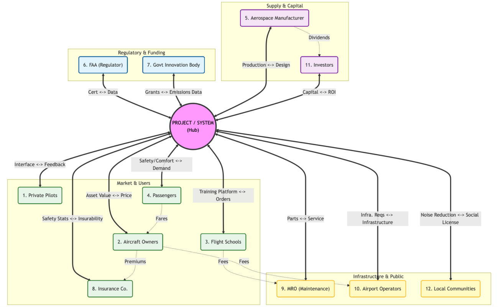
Most important stakeholders (weighted stakeholder occurrence on cumulative flow scores):
The method can under-rank operational roles (pilots) and boolean gatekeepers (FAA certification) relative to transaction volume—limitations addressed qualitatively in later goal prioritization.
Stakeholder needs were translated into twenty solution-neutral goals (G1–G20) with Must / Should / Might priorities and traceability to needs—forming the criteria used in functional architecture, enumeration constraints, and evaluation metrics.
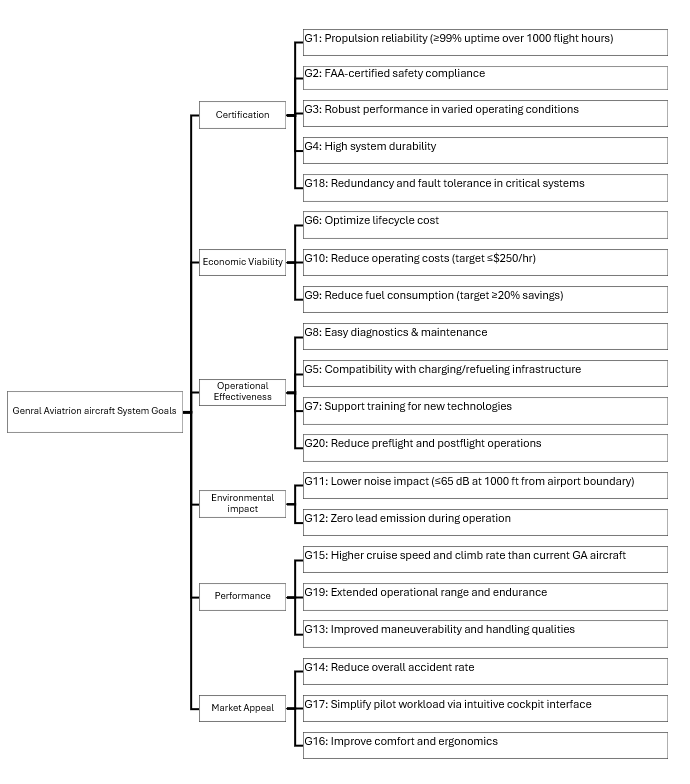
This phase defines what the system must do (functional decomposition, goal traceability, operational states) and how it is physically realized (subsystem hierarchy, interfaces, function-to-component allocation, and connectivity).
Six Level-1 functions (F1–F6) decompose the next-generation GA aircraft: generate and manage propulsion, control flight path, monitor and ensure safety, manage avionics and communications, support cabin and payload, and enable maintenance and health management. Each branches into Level-2 sub-functions with explicit data and control flows.
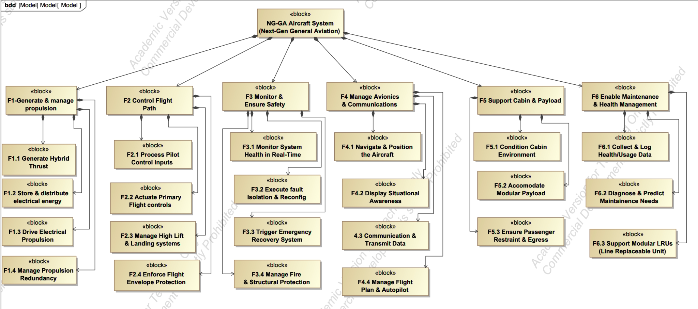
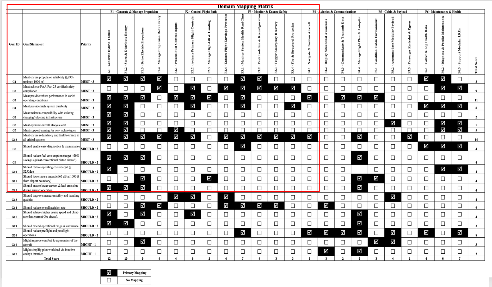
Operational architecture: Two SysML views define how the system behaves in operation—a lifecycle state machine for ground-to-air phases and emergency paths, and a primary use-case activity diagram for the passenger transport mission.
The activity diagram represents the primary use case where passengers are transported safely to their destination. Fuel enables generate propulsion, producing thrust for control flight path, which governs aircraft movement. The flight plan is processed by manage avionics and monitored by monitor safety to ensure safe navigation. In parallel, passengers are supported through support cabin and supervised by health management to maintain acceptable cabin and system conditions. All functions collectively enable controlled flight, resulting in passengers arriving safely at the destination.
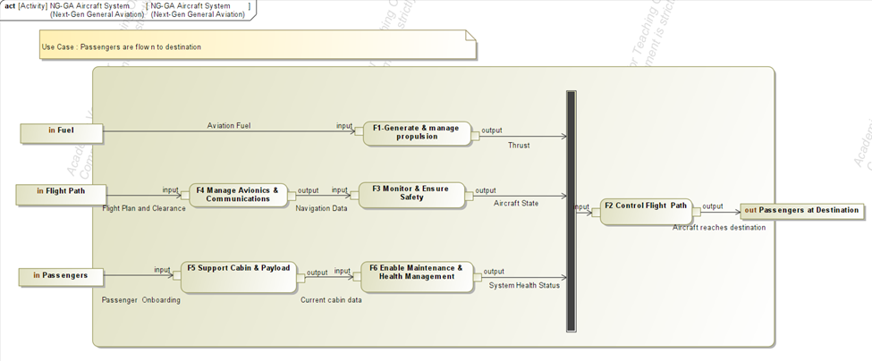
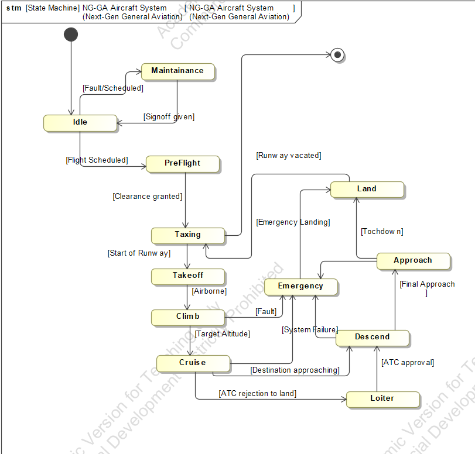
Five physical subsystems structure the implementation: propulsion, electric and energy, flight and control, safety and support, and airframe. Level-1 physical BDD and IBD define component hierarchy and cross-subsystem interfaces (power, control signals, sensor feedback, fault alerts). Level-2 allocated architecture maps 22 sub-functions onto physical components; a design structure matrix (DSM) captures mechanical, electrical, informational, and fluid coupling across 19 components.
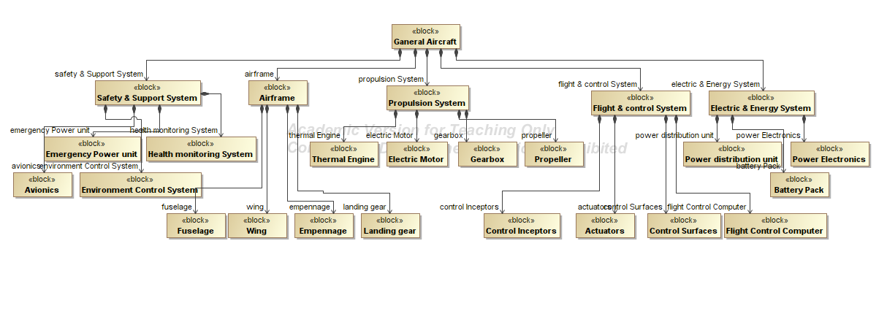
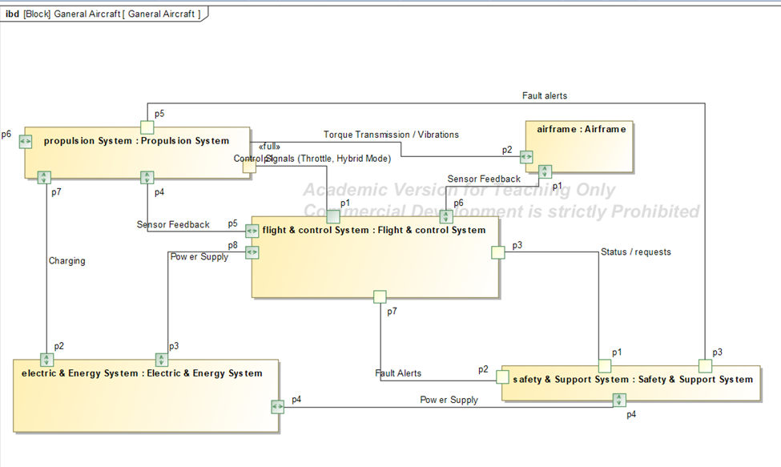
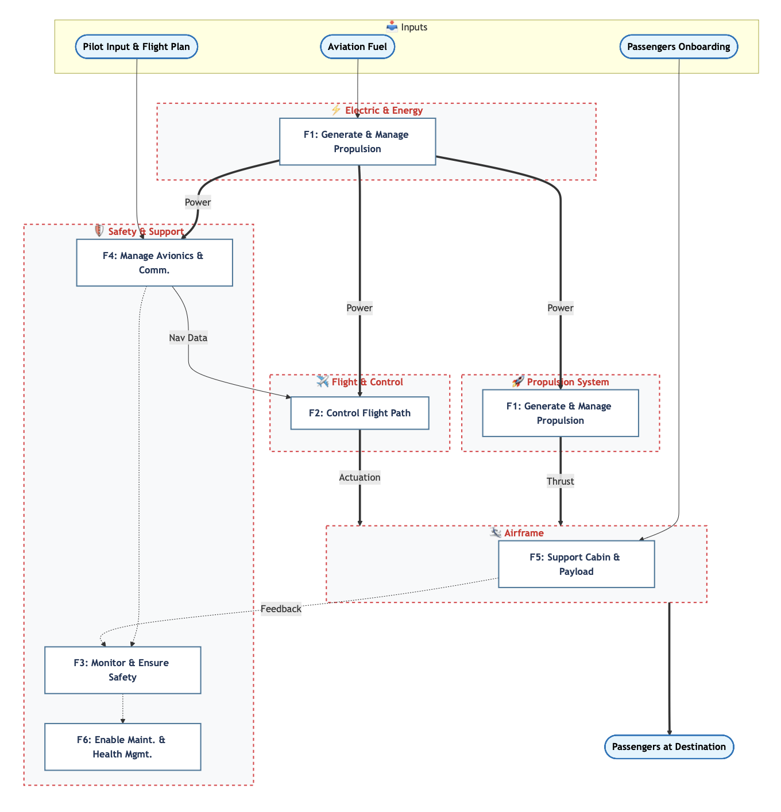
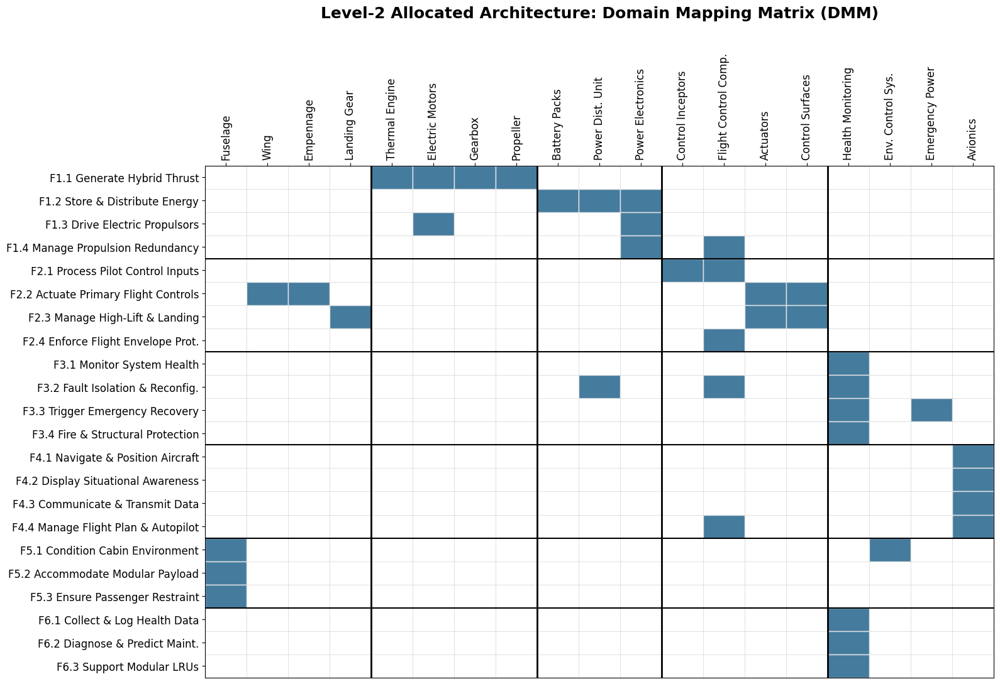
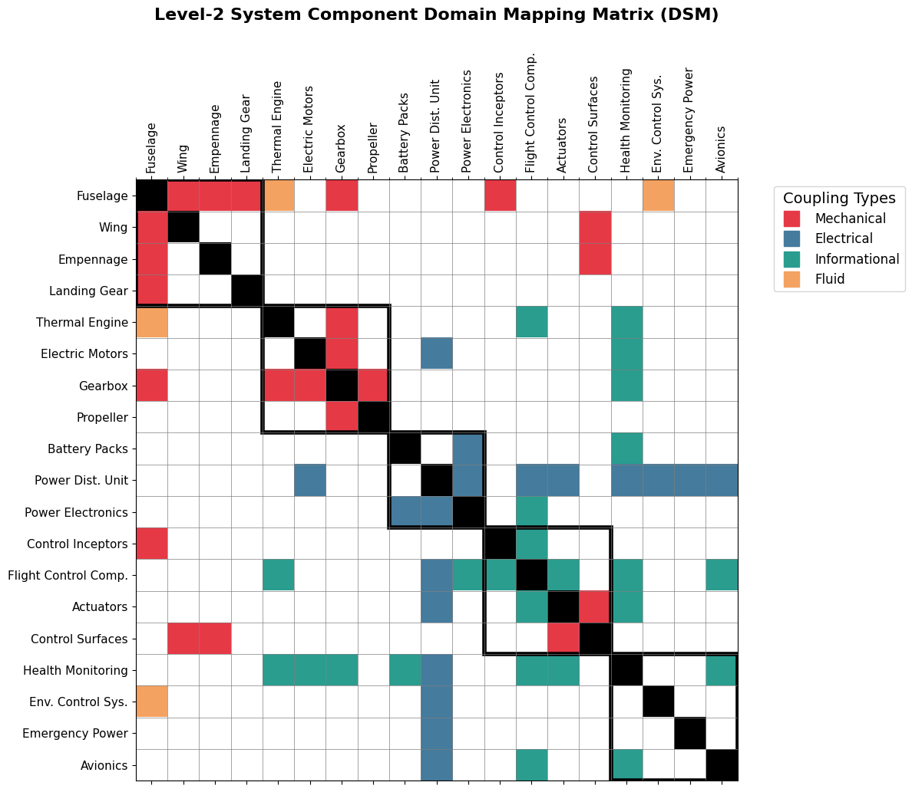
Physical decomposition and DSM connectivity inform later LRU partitioning (D7) and integration constraints used in architecture enumeration.
Eight architecture decisions (D1–D8) are encoded with canonical types (standard form, down-select, partition, binary). Full factorial expansion and constraint propagation yield every feasible hybrid-electric architecture—no sampling.
Enumeration in R (archr) proceeds in stages:
The architectural decision graph (ADG) documents dependencies so infeasible combinations are pruned before evaluation—reducing a much larger raw combinatorial space to 184,212 valid designs.
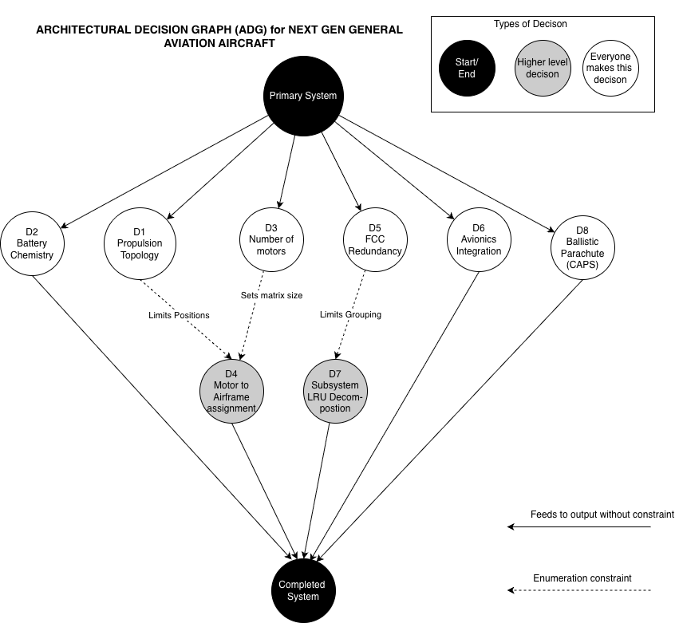
| ID | Decision | Type | Alternatives |
|---|---|---|---|
| D1 | Propulsion topology | Standard form | Series hybrid · parallel hybrid · turboelectric |
| D2 | Battery chemistry | Standard form | Li-ion NMC · Li-ion LFP · solid-state |
| D3 | Electric motor count | Standard form | 1 · 2 · 4 motors |
| D4 | Motor installation positions | Down-select | 6 binary sites; constrained by D1, D3 |
| D5 | FCC redundancy | Standard form | Simplex · dual · triple |
| D6 | Avionics integration | Standard form | Federated · IMA |
| D7 | LRU partitioning | Partitioning | 2 or 3 packages over six subsystems |
| D8 | Ballistic parachute (CAPS) | Binary | Installed · not installed |
Each of the 184,212 feasible architectures maps to four system-level metrics using deterministic value functions grounded in stakeholder goals. The full evaluated set is then explored through tradespace visualization, Pareto ranking, sensitivity analysis, and feature mining to identify dominant design choices.
Additive subsystem costs. Traces to G6, G10 — operators and airlines need predictable hourly economics.
Hybrid series–parallel critical path across propulsion, control, and avionics. Traces to G2, G20 — regulators and program managers need feasible certification timelines.
Series–parallel reliability block diagram. Traces to G1, G14, G18 — safety-critical redundancy and fault tolerance.
Min–max and redundancy-aware lifetimes. Traces to G4, G8 — maintenance teams and owners need component longevity.
Aggregation uses additive cost where subsystems are separable, critical-path certification for sequential dependencies, series–parallel reliability for coupled failure chains, and min–max durability for weakest-link and redundancy effects.
Pairwise and multi-metric views of the full feasible set (no subsampling): operating cost, certification schedule, propulsion reliability, and system durability.
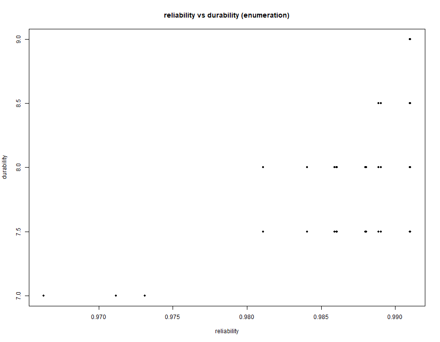
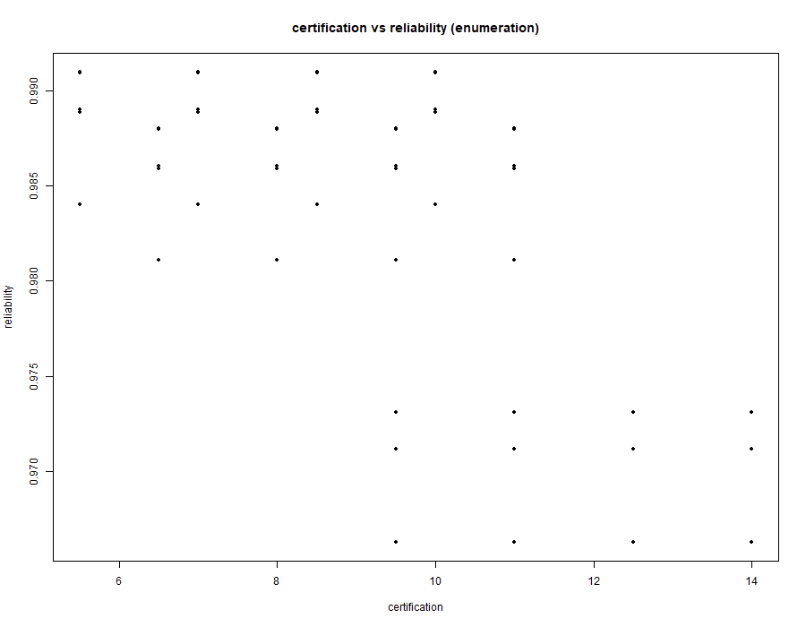
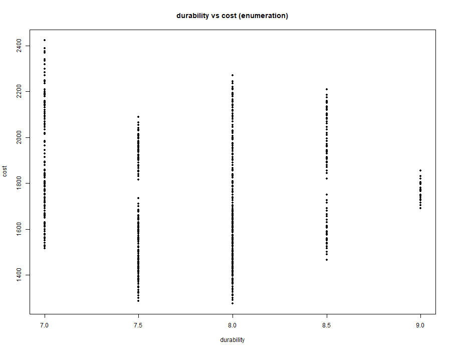
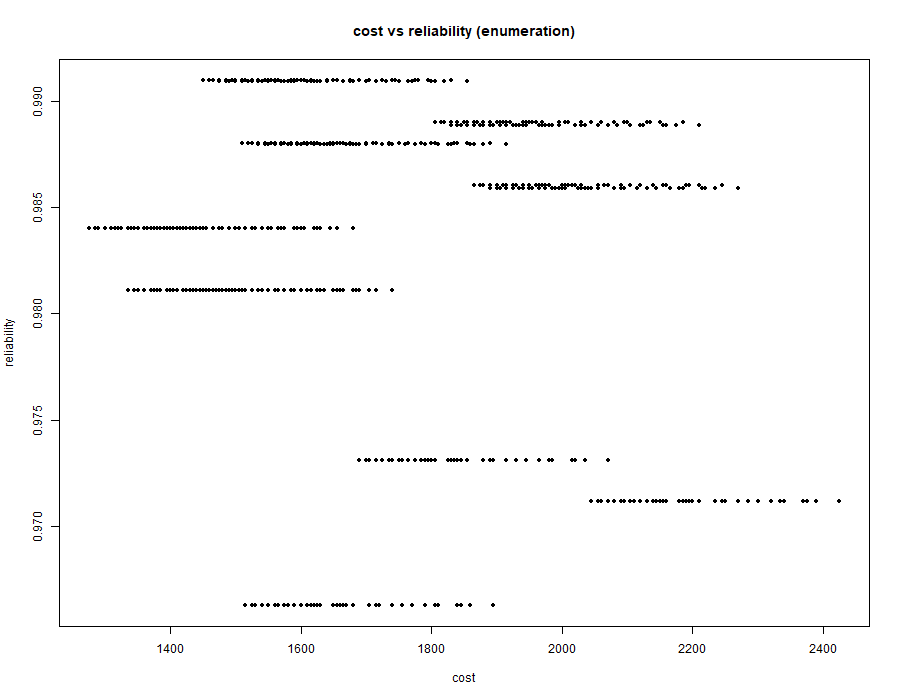
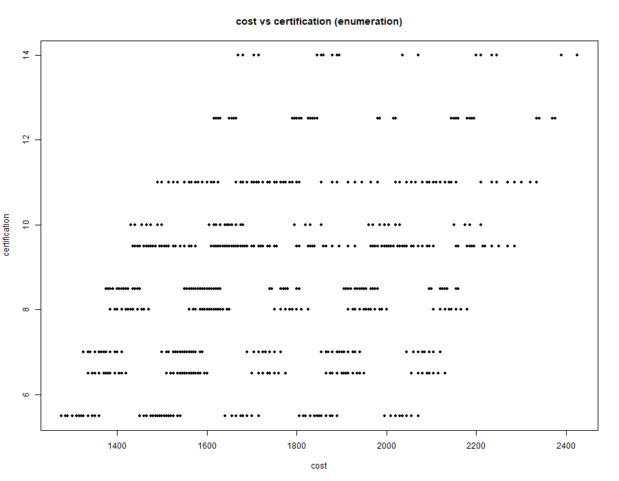
The tradespace is not a smooth continuous surface—it shows discrete structure driven by architectural decisions rather than fine tuning within a single configuration.
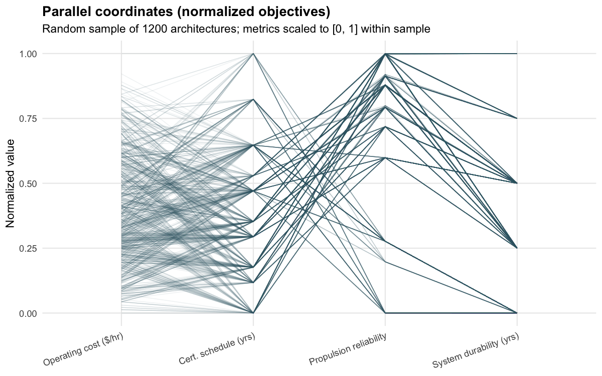
Architectures were sorted by Pareto rank across all four objectives. A fuzzy frontier (rank < 10) highlights the near-optimal region in two-dimensional views while the true rank-one front captures non-dominated designs.
Rank-one designs share recurring traits: series hybrid topology (D1 = 0), at least one wing motor but not more than two across wing stations, no nose or tail motors (D4), ballistic parachute installed (D8 = 1), and predominantly three LRU partitions (D7)—though many partition assignments are metrically equivalent under the current model.
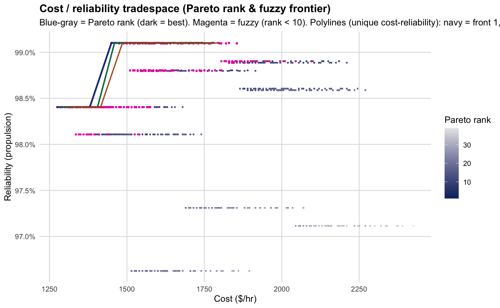
Sensitivity, connectivity, Simmons four-quadrant charts, and association-rule feature mining identify which decisions drive metrics and which combinations appear consistently in the good (fuzzy Pareto) region.
Architectural hubs (high sensitivity + high connectivity): D1 propulsion topology and D3 motor count dominate cost, reliability, and durability—they should be frozen early because changes cascade through the design. D2 battery chemistry and D5 FCC redundancy are also high-impact for specific metrics.
Independent levers (high sensitivity, low connectivity): D6 avionics integration and D8 CAPS shift certification or cost with limited coupling to propulsion layout—candidates for later trade studies.
Feature mining on the fuzzy Pareto set:
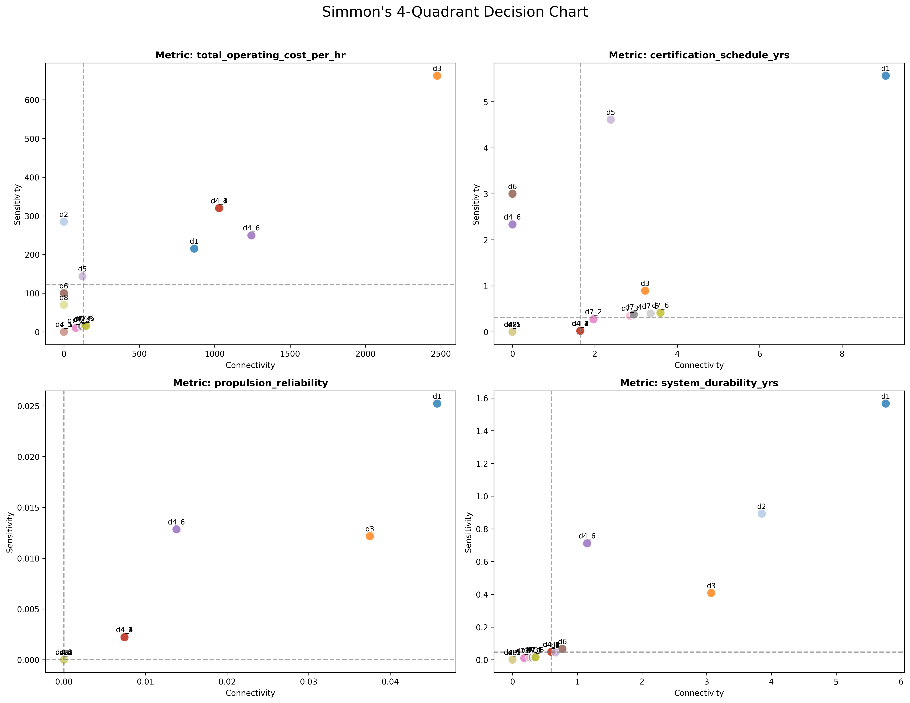
Exhaustive evaluation and Pareto ranking over the full set is informative for tradespace structure, but cost grows with every additional architecture. The next step uses a genetic algorithm as a scalable alternative to obtain the Pareto front without evaluating every design.
Enumerating and evaluating every feasible architecture is the ground truth for tradespace analysis, yet it becomes increasingly time-consuming as the decision space grows. Ranking the full set to obtain the Pareto front means running the value model on each design—feasible for this study’s 184,212 architectures, but impractical at larger scale. A multi-objective genetic algorithm is the alternative: it searches the discrete space and approximates the Pareto frontier with far fewer evaluations, making it practical to surface strong architectures for down-selection.
Full factorial enumeration plus metric evaluation scales linearly with combinatorics. Tradespace plots and fuzzy-Pareto analysis in the previous section required evaluating the entire feasible set; for higher architecture counts that workflow is slow and repetitive. NSGA-II (via rmoo in R) was used instead to explore the same decision variables and objectives efficiently—converging on a competitive Pareto region without exhaustively scoring every chromosome.
int2bit / bit2int)The run converges quickly (best fitness stabilizes near iteration 20), recovering a structured Pareto region aligned with dominant decisions D1, D3, D5, and D7 from tradespace analysis—supporting use of the GA to identify competitive architectures with much less computation.
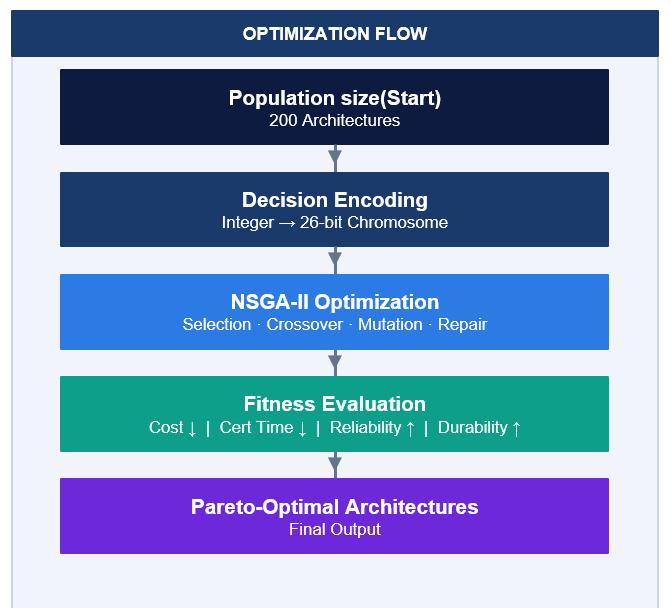
The NSGA-II run returns Pareto-optimal candidates without evaluating all 184,212 architectures. Plotting the GA down-selections against the full evaluated tradespace (red markers) shows they sit on competitive regions across every pairwise metric view—minimum cost at a target reliability band, favorable durability–cost combinations, and strong certification–schedule positions—achieved with a population–generation search rather than exhaustive ranking.
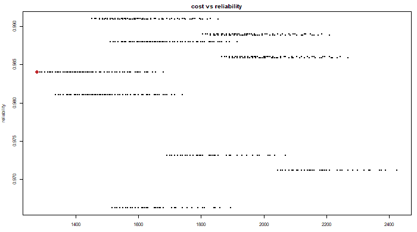
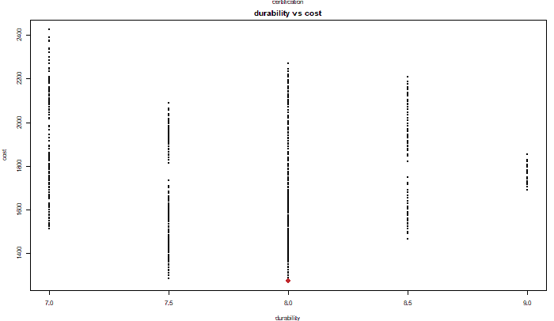
Reliability stratifies into discrete horizontal tiers while cost varies widely within each tier; the GA selection lands on the cost-efficient edge of its reliability band. Durability vs. cost shows vertical bands of equivalent durability with many cost levels—the selected design pins the favorable low-cost point for its durability target.
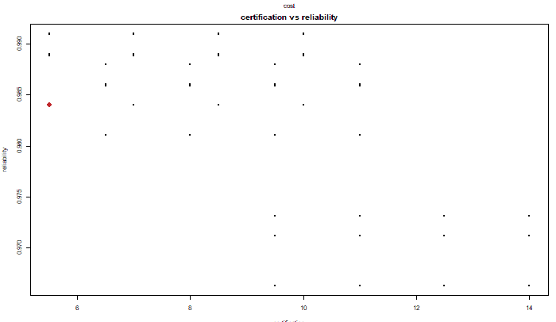
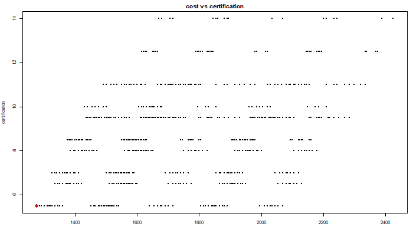
Cost vs. certification exhibits horizontal bands at discrete schedule levels; the highlighted architecture achieves competitive cost within its certification band. Certification vs. reliability shows the coupled grid structure from discrete FCC, avionics, and propulsion choices—the GA solution remains in the high-performing region without scanning every point in the cloud.
Architectures A and B below are the two GA Pareto representatives highlighted in the tradespace plots—chosen from the optimized front rather than manual screening of all 184,212 designs.
Central Pareto region: moderate propulsion complexity, efficient certification path, high reliability through balanced avionics and control redundancy.
Similar aggregate metrics with redundancy concentrated in propulsion-adjacent and safety-critical subsystems—preferred when fault tolerance outweighs structural simplicity.
Final report and presentation. Supporting materials in the repository document the step-by-step progression shown on this page.